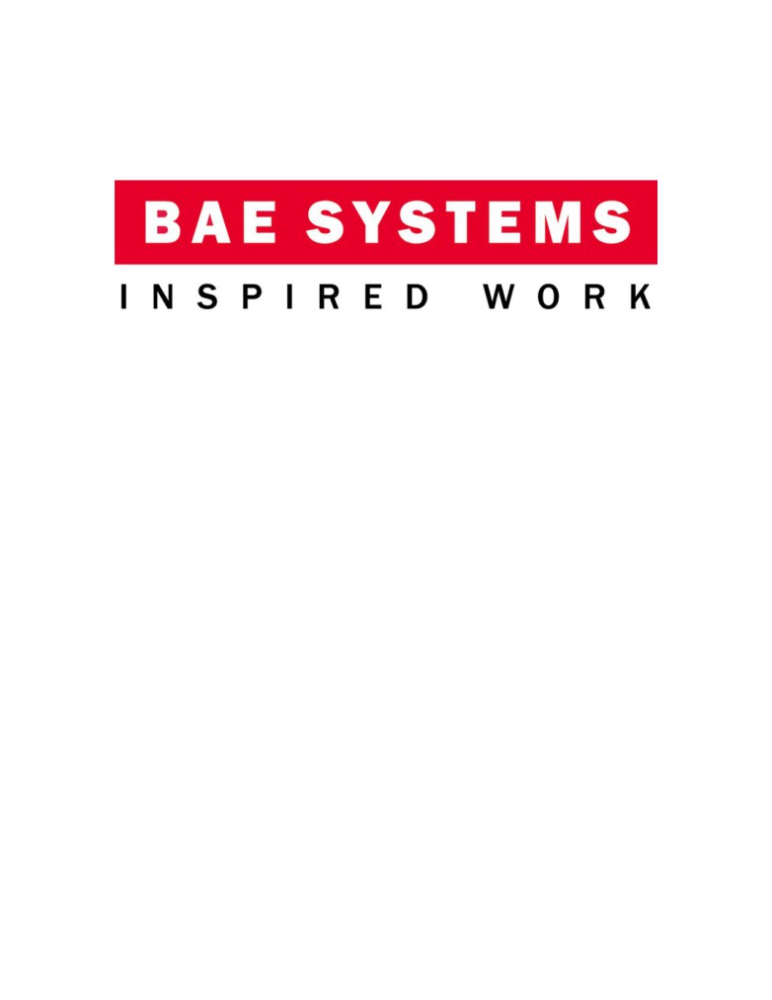
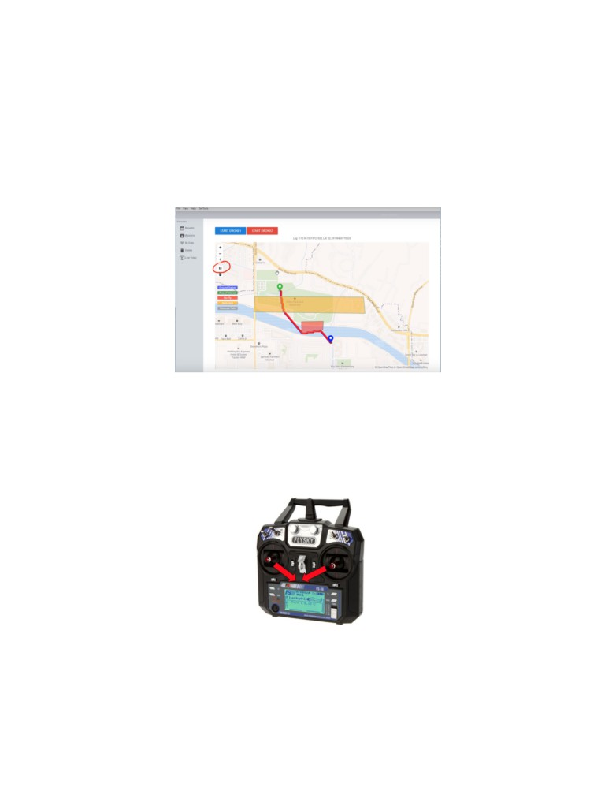

User Manual for UAV Rescue
System
Team Members:
Evan Weiler
Brady Phu Bui
Isaac Fimbres
Emanuel Inacio
Abdalmohsen Mutlaq Al Qahtani
Sponsor:
Mark Meadows
Brent McFarland
Mentor:
Michael Jelinek
Materials Needed
●
1 Dell Laptop with MavProxy, Mission Planner, Socet GXP Software installed
●
2 fully assembled UAVs
●
1 Multi-Battery charger for both UAV batteries
●
2 UAV remotes
●
2 FPV Radio Telemetry Ground Modules
●
1 FPV A/V Receiver
●
1 ImmersionRC Uno5800 5.8GHz V4 A/V Receiver
●
1 EasyCAP AV to USB video converter
Step 1: Setup
1.1
Plug FPV Radio Telemetry Ground Module and EasyCAP into laptop
1.2
Make sure the correct COM ports are set in the “mission.js” file. Current
COM for ports can be viewed in the Windows Device Manager
1.3
Open a command window and navigate to main directory of software
1.4
Run “tileserver-gl-light <map tile file>” to start map server
1.5
Open another command window and run “npm start” to start software
1.6
Plug battery into UAV
1.7
Disengage safety switch (will be secured on the side of one of the landing
gears) to allow UAV flight
1.8
Wait for startup beeps to complete
Step 2: Flight Path Creation
2.1
Select “File” in the menu, then “New Mission”. After hitting proceed a
connection to the drones will be initiated

2.2
Enter locations of ground station and area of interest location by clicking
on their respective buttons and placing a pin.
2.3
To enter restricted and no-fly zones, first click on the polygon button
circled below in red. Click on the map to set points of the polygon, then press
enter once the points are set. Once a shape is created, click on the no-fly or
restricted button to set its type. (NOTE: zones are not automatically expanded,
so a user must manually create larger zones to ensure drones don’t fly 10 ft
within a no-fly zone.)
2.4
Click “Generate Path” to create optimal flight path. Click “Start Drone1”
and “Start Drone2” to send the waypoints to the respective drones.
2.5
Start drone flight manually with remotes
2.5.1 Turn on Remote (Possible at any point prior to arming the UAVs)
2.5.2
Arming the UAV
○ ON THE REMOTE
2.5.3
Turn VRB Dial (Top right Silver Dial) all the way to the left
(counterclockwise)
2.5.4
Then to arm UAV, take both Flight Sticks and push down
and toward the middle of the remote and hold until propellers start
spinning
2.5.5
Quickly, turn VRB Dial into the shaded area (indicated on
the remote)
2.5.6 Quickly, take left flight stick past half throttle
2.5.7
Repeat process for 2nd UAV with 2nd ArduPilot window
open
2.5.8 UAVs will now take off and follow their automated mission
NOTE: HOW TO DISARM (at end of flight after UAVs have
landed)
● Take both flight sticks and push them down and out. Hold until blades
have stopped spinning.
Step 3: UAV Flight
3.1
After path creation, it will take about 30 seconds for the path to be
uploaded to the UAVs
3.2
UAVs will take off and begin the flight to the destination
3.3
Upon arrival, UAVs will enter into a hover for 20 seconds. Drone 1 will be
hovering at 30 ft while Drone 2 will be hovering at 40 ft
Step 4: Data Acquisition
4.1
After starting a mission, click “Live Video” on the sidebar to show the video
feed. Telemetry data for both drones will also be displayed.
4.2
Click “Report” once the drones reach the area of interest to generate a
report with the current telemetry data. In SOCET GXP, Select “Products” then
“PowerPoint” to open and save the report in Microsoft PowerPoint.
Step 5: UAVs Return
5.1
Once all waypoints have been reached (or the UAVs run low on battery)
the UAVs will return to their starting point
5.2
Click “Save Mission” on the sidebar to save the mission data to AWS.
Step 6: AWS Retrieval
There are two ways to retrieve data from AWS; by using the search field on the
top-right corner or by using the option “All Missions” on the left-side menu bar.
6.1 - Retrieve a mission by using the search field:
6.1.1 - On the search field, type the full name of a mission or type one or
more letters that the mission to search starts with, which will display a popover
with all missions that start with the letter or the world that was typed
6.1.2 - On the search results popover, click on the name of the mission you want
to view, which will show the mission data
Fig: 1 Viewing mission data after clicking on the name of the mission on the
popover results
6.1.3 - Single click on the image or video you want to view or watch
Fig.1 : viewing an image
Fig.2 : Watching a video. Hovering or clicking on a video, will display the video
controls. You can maximize the video to occupy the full screen if needed.
6.1.4 - To view mission telemetry, droneInput, drone1 or drone2 content, click on
telemetry.json, droneInput.json, drone1.txt or drone2.txt respectively. Doing so will
immediately download the corresponding file in the download directory/folder of your
laptop/computer. When the file finishes downloading, a toast message saying “Finished
Download” will be displayed on the bottom-left corner.
6.2 - Retrieve a mission by using the option “All Missions” on the left-side
menu bar.
6.2.1 - Click on “All Missions” on the left-side menu bar, which will display the
following screen:
6.2.2 - Click on the mission you want to view. This will display the mission data
6.2.3 - Single click on the image or video you want to view or watch
Fig 3: Viewing an image
Fig.2 : Watching a video. Hovering or clicking on a video, will display the video
controls. You can maximize the video to occupy the full screen if needed.
6.1.4 - To view mission telemetry, droneInput, drone1 or drone2 content, click
on telemetry.json, droneInput.json, drone1.txt or drone2.txt respectively. Doing so will
immediately download the corresponding file in the download directory/folder of your
laptop/computer. When the file finishes downloading, a toast message saying “Finished
Download” will be displayed on the bottom-left corner.
Step 7: Developer Notes
7.1
The Visual Studio Project for SOCET GXP integration is located in the
“Image Loader” example in the SOCET GXP 4.3.0 DevKit. Anytime changes are
made, the code must be rebuilt and the resulting .exe must be placed in the bin
directory of the SOCET GXP 4.3.0 installation (Refer to live-video.js for the exact
path)
7.2
Anytime changes are made to the A star algorithm code, code must be
rebuilt with visual studio as well.
7.3 AWS credentials may need to be updated in order for aws part of the
software to work
Connecting to AWS requires an ACCESS_KEY_ID and a
SECRET_ACCESS_KEY which can be obtained for free on aws website. To get
these credentials, follow the following steps:
account.
7.3.2 - Once the account is created, sign in to the console by going to
top-right corner. Then enter your account email and password that you just
created.Once you’re signed in, you’ll be taken to your console where you can
manage your aws account
7.3.3 - Click on “Services” on the top-left corner. This will open a
dropdown menu page with several options. On the center of this menu, there is a
search field. Type “IAM” and click on enter. This will take you to your IAM
management page.
7.3.4 - On the center of IAM page, click on “Delete your root access key”
or “create your root access key” depending on which option will be available for
you. This will open a dropdown with the option “Manage Security Credentials”.
Click on this optio, which will prompt you with two options- “Continue to Security
Credentials” and “Get Started with IAM users”. Chose “Continue to Security
Credentials”.
7.3.5 - Click on “Access Keys (access key ID and Secret access key)”
option and follow instructions to create a new access key and secret access key.
7.3.6 - Once you’re done creating access key and secret access key, you
will have to change the application credentials on three files on the code, namely
“./controllers/save-mission.js”, “./public/javascript/search-box-results.js” and
“./public/javascript/all-missions.js”. The location in the code where you have to
change the application credentials is on top of those files where you have:
const ACCESS_KEY_ID = "ACCESS_KEY_ID";
const SECRET_ACCESS_KEY = "SECRET_ACCESS_KEY ";
7.3.7 - Replace and “ACCESS_KEY_ID and SECRET_ACCESS_KEY on
the right with the ones you just created and this should make AWS to work with
the new credentials
7.3.8 - One finals step will be creating a bucket and then replacing the
bucket-name in those three files with the new bucket-name you just created.
Instructions on how to create a bucket can be found on:
The location where to replace the bucket-name is:
var bucketParams = {
Bucket: "bae-systems-mp"
};
7.3.9 - Replace “bae-systems-mp” with the new bucket name you just
created and the app should be all ready to go.